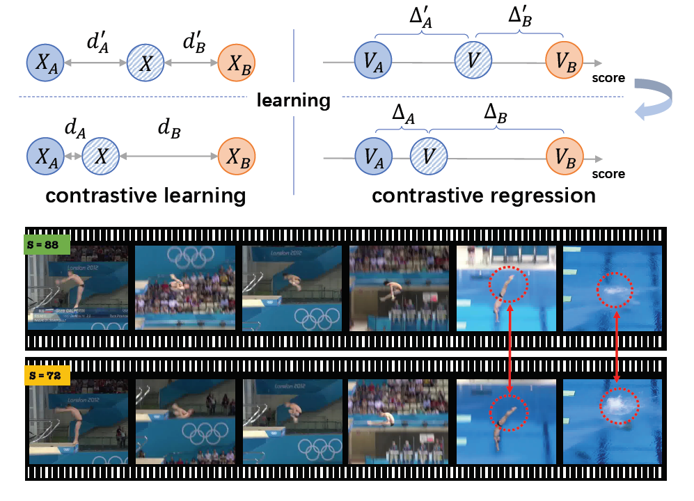
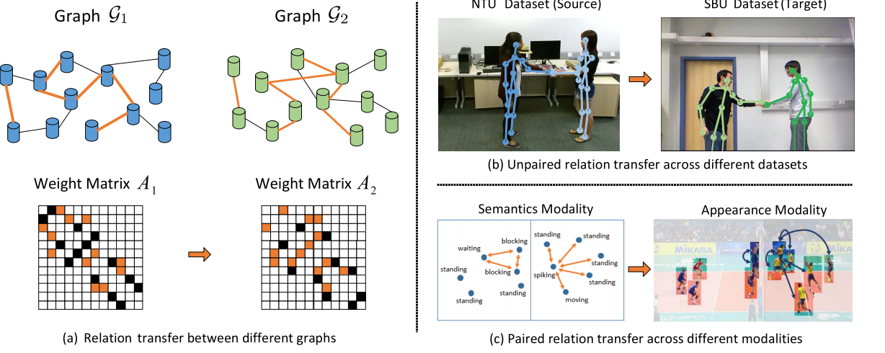
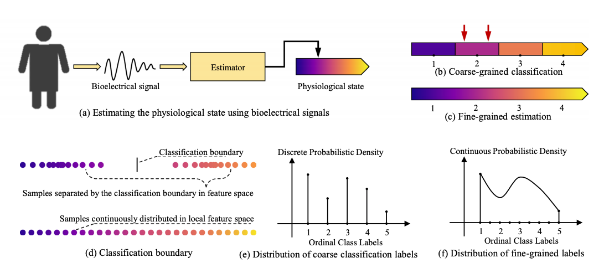

|
Xumin Yu
I am a second year Ph.D student in the Department of Automation at Tsinghua University, advised by Prof. Jiwen Lu. In 2020, I obtained my B.Eng. in the Department of Electronic Engineering, Tsinghua University.
I am broadly interested in computer vision and deep learning. My current research focuses on 3D vision and Video analysis.
Email /
Google Scholar /
Github
|
|
|
News
2021-07: 2 papers (including 1 oral) on 3D vision and video understanding are accepted to ICCV 2021.
|
|
Publications
* indicates equal contribution
|
|
|
PoinTr: Diverse Point Cloud Completion with Geometry-Aware Transformers
Xumin Yu*, Yongming Rao *, Ziyi Wang, Zuyan Liu, Jiwen Lu , Jie Zhou
IEEE International Conference on Computer Vision (ICCV), 2021
Oral Presentation
[arXiv] [supp] [Code] [中文解读 (by CVer)]
PoinTr is a transformer-based model for point cloud completion. By representing the point cloud as a set of unordered groups of points with position embeddings, we convert the point cloud to a sequence of point proxies and employ a transformer encoder-decoder architecture for generation. We also propose two more challenging benchmarks ShapeNet-55/34 with more diverse incomplete point clouds that can better reflect the real-world scenarios to promote future research
|
|

|
Group-aware Contrastive Regression for Action Quality Assessment
Xumin Yu*, Yongming Rao*, Wenliang Zhao, Jiwen Lu , Jie Zhou
IEEE International Conference on Computer Vision (ICCV), 2021
[arXiv] [Code]
We propose a new contrastive regression (CoRe) framework to learn the relative scores by pair-wise comparison, which highlights the differences between videos and guides the models to learn the key hints for assessment.
|
|

|
Graph Interaction Networks for Relation Transfer in Human Activity Videos
Yansong Tang, Yi Wei , Xumin Yu, Jiwen Lu , Jie Zhou
IEEE Transactions on Circuits and Systems for Video Technology (TCSVT), 2020
[Paper]
We propose a graph interaction networks (GINs) model for transferring relation knowledge across two graphs two different scenarios for video
analysis, including a new proposed setting for unsupervised skeleton-based action recognition across different datasets, and supervised group activity recognition with multi-modal inputs.
|
|

|
Learning fine-grained estimation of physiological states from coarse-grained labels by distribution restoration
Zengyi Qin , Jiansheng Chen , Zhenyu Jiang , Xumin Yu, Chunhua Hu, Yu Ma, Suhua Miao and Rongsong Zhou
Scientific Reports , 2020
[Paper] [Code]
Our method allows machine learning algorithms to perform fine-grained estimation of physiological states (e.g., sleep depth) even if the training labels are coarse-grained.
|
|
Honors and Awards
Excellent Undergraduate in Tsinghua University, 2020
The First Prize of Microsoft Imagine Cup, China Finals, 2018
|
|